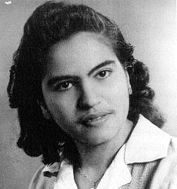
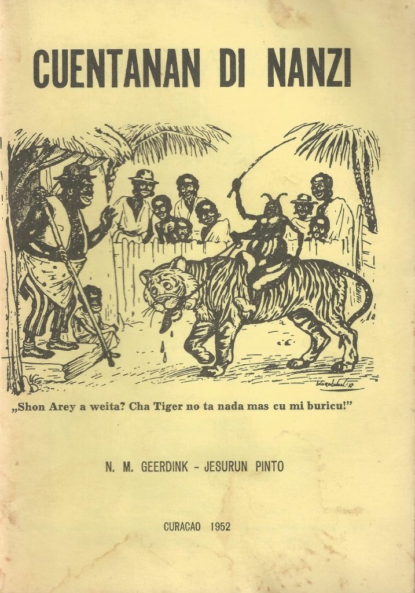
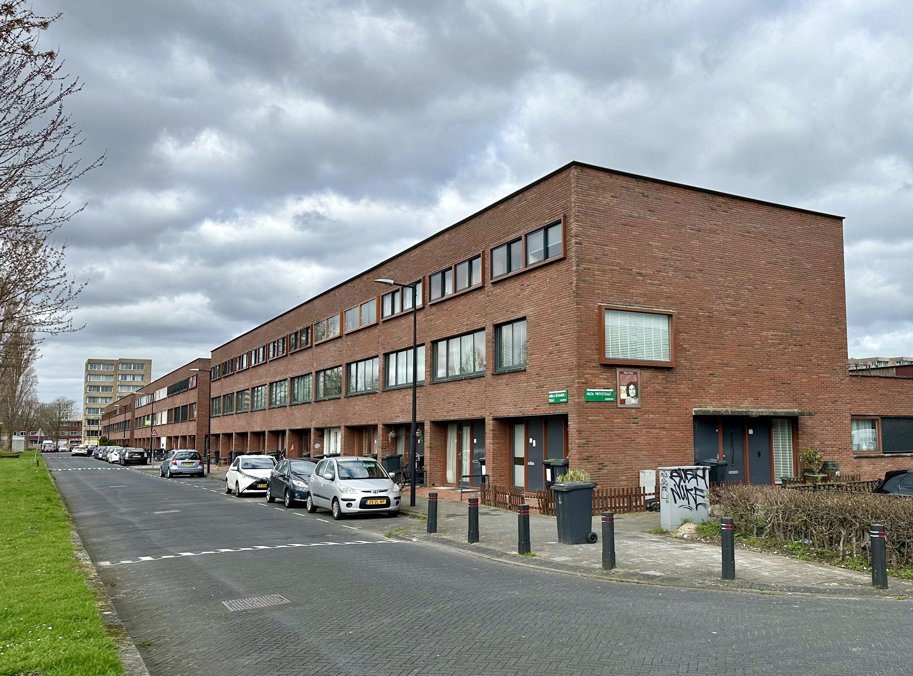
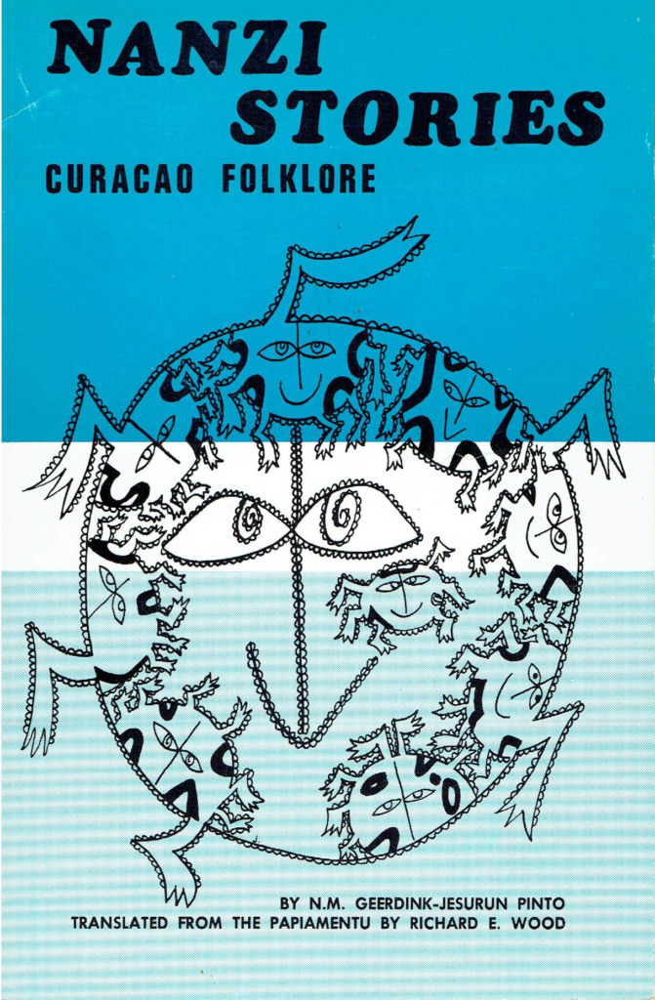

Nilda Maria Geerdink Jesurun Pinto werd geboren op 12 december 1918 in Willemstad op Curaçao. Zij overleed op 17 april 1954 in Hengelo in Nederland. Nilda was lerares en schrijfster. Zij werkte hard om de cultuur van de Nederlandse Antillen te beschermen. Zij werd beroemd omdat zij als eerste kinderboeken en verhalen in het Papiaments opschreef.
In de jaren dertig en veertig was Nederlands de belangrijkste taal op school. Nilda vond dat leerlingen hun eigen taal, het Papiaments, moesten spreken. Zij was de eerste die traditionele liedjes en verhalen opschreef. Een bekend voorbeeld zijn de verhalen over de slimme spin Kompa Nanzi.
In 1952 schreef zij het boek Cuentanan di Nanzi. Dat boek heeft ongeveer dertig verhalen. De verhalen bevatten invloeden uit Afrika en Europa, maar ook dingen van Curaçao zelf zoals lokaal fruit en eten. Door haar werk konden kinderen meer leren over hun eigen geschiedenis en cultuur.

Gefotografeerd door Andrew Ruppenstein, 16 maart 2024

Cuentanan di nanzi; De eerste editie van spinverhalen verscheen in 1952
Beyond writing, Pinto actively shared this folklore through innovative platforms tailored to children. She hosted a radio program on station Curom (now Z86) that broadcast Papiamento songs and stories, fostering oral storytelling in a broadcast medium, and directed a children's choir called De Kanariepietjes to perform traditional tunes.
Haar werk vormde de basis voor latere tweetalige boeken met de Nanzi-verhalen. Hieronder vallen de Papiaments-Nederlandse uitgave uit 2005 (uitgegeven door uitgeverij Zirkoon), en de Papiaments-Spaanse (2012) en Papiaments-Engelse (2018) versies uitgegeven door Fundashon Instituto Raúl Römer. Deze edities maakten de teksten moderner, maar de kern bleef behouden. De nalatenschap van Pinto leeft voort op Curaçao: er zijn een school in Willemstad en een straat in Brievengat naar haar vernoemd. Daarnaast is er in 2023 in Amsterdam een herdenkingsbord geplaatst als erkenning voor haar bijdrage aan de Antilliaanse culturele identiteit.
52° 19.252′ N, 4° 57.901′ E. Het herdenkingsbord staat in Amsterdam, Noord Holland. Het bevindt zich in Amsterdam Zuidoost. Het staat op de kruising van de Nilda Pintostraat en de Isabella Richardsstraat. Als je in de Nilda Pintostraat naar het oosten reist, vind je het aan de linkerkant.
In de tijd dat het Nederlands de standaardtaal was in het onderwijs, zette Nilda Jesurun Pinto zich in voor het behoud van het Papiaments, de moedertaal van haar leerlingen. Zij verzamelde traditionele liedjes, kinderspelletjes en verhalen, waaronder die over de spin Kompa Nanzi, die alle grote dieren en zelfs mensen te slim af is. Bij radiostation Curom (nu Z86) presenteerde zij een kinderprogramma met liedjes en verhalen in het Papiaments en zij had haar eigen kinderkoor, De Kanariepietjes. Er zijn ook een straat in de wijk Brievengat en een school in Willemstad op Curaçao naar haar vernoemd.
In de jaren dertig, toen het Nederlands de standaardtaal was in het onderwijs op Curaçao, zette Nilda Jesurun Pinto zich in voor het behoud van het Papiaments, de moedertaal van haar leerlingen. Zij verzamelde traditionele liedjes, kinderspelletjes en verhalen, waaronder die over de spin Kompa Nanzi, die alle grote dieren en zelfs mensen te slim af is.

Gefotografeerd door Andrew Ruppenstein, 16 maart 2024
Bij radiostation Curom (nu Z86) presenteerde zij een kinderprogramma met liedjes en verhalen in het Papiaments en zij had haar eigen kinderkoor, De Kanariepietjes. Er is ook een straat naar haar vernoemd in de wijk Brievengat op Curaçao, en er is eveneens een school in Willemstad op Curaçao.
Regionaal gezien ligt het in Europa, de Europese Unie, Atlantisch Europa, de Benelux, het Schengengebied, West-Europa en de westerse wereld. Historisch gezien ligt het in het gebied van het voormalige Romeinse Rijk, en in het bijzonder in het Heilige Roomse Rijk.
De samenwerking tussen Pinto en componist Rudolf Th. Palm hielp om de cultuur nog beter te beschermen. In 1948 publiceerden zij het boek 'Bam canta' (Laten we zingen). Dit was een verzameling van 47 traditionele religieuze en wereldlijke liedjes op muziek. Dit boek legde niet alleen vergeten melodieën uit de Antilliaanse vertelcultuur vast, maar bracht ook literatuur en muziek samen. Zo ontstond er een goede manier om het cultureel erfgoed van Curaçao te beschermen.
De verzameling Cuentanan di Nanzi van Pinto is in veel talen vertaald. Hierdoor bereiken de verhalen nu ook mensen die geen Papiaments spreken. In 1970 bewerkte de Nederlandse docent Jan Droog 25 Nanzi verhalen naar het Nederlands. Hij noemde deze reeks Biba Nanzi. De verhalen waren bedoeld voor oudere jongeren en bevatten grappige aanpassingen voor Nederlandse lezers. Het boek verscheen als onderdeel van een serie volksverhalen uit de Nederlandse Antillen. In 1972 kwam er een Engelse vertaling van taalkundige Richard E. Wood met de titel Nanzi Stories: Curaçao Folklore. De Curaçaose schrijver Cola Debrot prees dit boek. Hij vond dat het dicht bij de originele verhalen uit het Papiaments bleef. Dit was anders dan sommige Nederlandse versies, waarin de verhalen een moralistische boodschap kregen.

Engelse editie van Nanzi verhalen door Nilda Geerdink-Jesurun Pinto uit 1972. Met illustraties door José Capricorne
Wetenschappers hebben ook veel aandacht gegeven aan de bijdrage van Pinto aan de Antilliaanse folklore. In 1972 maakte Richard E. Wood niet alleen een Engelse vertaling. Hij schreef ook een inleiding over hoe belangrijk de Nanzi-verhalen zijn voor de samenleving op Curaçao.
In 1983 schreef Wim J.H. Baart een proefschrift over de Nanzi-verhalen. Hij onderzocht de West-Afrikaanse wortels van de verhalen en hoe ze veranderden in het Caribisch gebied. Hij legde uit dat de verhalen een vorm van stilletjes protest waren tegen de slavernij. Nanzi staat in zijn onderzoek symbool voor de weerbaarheid van mensen die onderdrukt werden.
Wim Rutgers bespreekt het werk van Pinto in zijn boek Bon dia! Met wie schrijf ik? uit 1988. Hij ziet haar werk als een belangrijk moment: het was de stap van verhalen die alleen verteld werden naar geschreven boeken in het Papiaments. Hij laat zien hoe zij Afrikaanse thema's combineerde met christelijke en lokale verhalen. Ook is hij kritisch op latere versies van de verhalen waarin de inhoud minder puur was gemaakt.
Naast haar boeken deelde Pinto de cultuur ook via een radioprogramma bij zender Curom (nu Z86). Zij zond hierin liedjes en verhalen in het Papiaments uit. Ook leidde zij het kinderkoor De Kanariepietjes dat traditionele liedjes zong. Op deze manier hield zij de vertelcultuur levend via de radio en optredens.
Na haar overlijden is Pinto op verschillende manieren geëerd. Dit laat zien hoe groot haar invloed nog steeds is. In 1959 werd een straat in de wijk Brievengat in Willemstad naar haar vernoemd om haar inzet voor het behoud van de cultuur te eren. In 1962 werd de Nilda Pinto Huishoudschool opgericht. Dit is tegenwoordig de Nilda Pinto SBO, een school voor middelbaar beroepsonderwijs in de Wageningenstraat in Willemstad. In 1972 vierde de school het tienjarig bestaan met een speciale commissie. Dit laat zien hoe belangrijk haar rol was voor het onderwijs.
De nalatenschap van Pinto is nog steeds van grote waarde voor de literatuur in het Papiaments en het behoud van de Antilliaanse folklore. Haar verzamelingen vormden de basis voor de ontwikkeling van de kinderliteratuur in deze taal na de Tweede Wereldoorlog. Door mondelinge Nanzi verhalen om te zetten in toegankelijke teksten, verbond zij het Afrikaanse erfgoed met de identiteit van Curaçao. Zij inspireerde latere schrijvers en docenten om te kiezen voor authentieke Antilliaanse verhalen zonder moralistische boodschap tijdens de periode van dekolonisatie. Haar werk wordt in de Encyclopedie van de Nederlandse Antillen uit 1985 erkend als een hoeksteen, samen met dat van Elis Juliana en Sonia Garmers. Ook wordt haar werk nog steeds gebruikt bij onderzoek naar Creoolse verhalen over de sluwe spin.
Dit historische monument staat in de volgende lijsten: grokipedia.com • klasse-oplossingen.nl • animal-wisdom.org • resources.huygens.knaw.nl. Daarnaast is het opgenomen in de pure.knaw.nl, en de www.dbnl.org